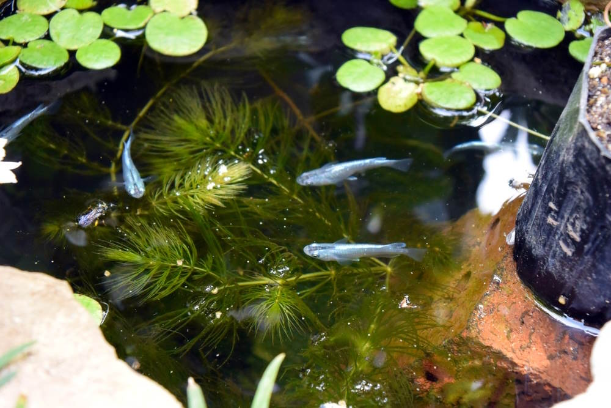
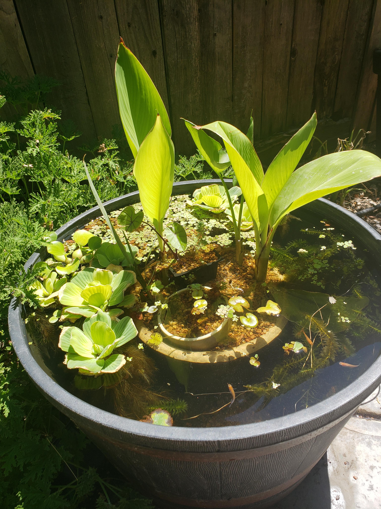
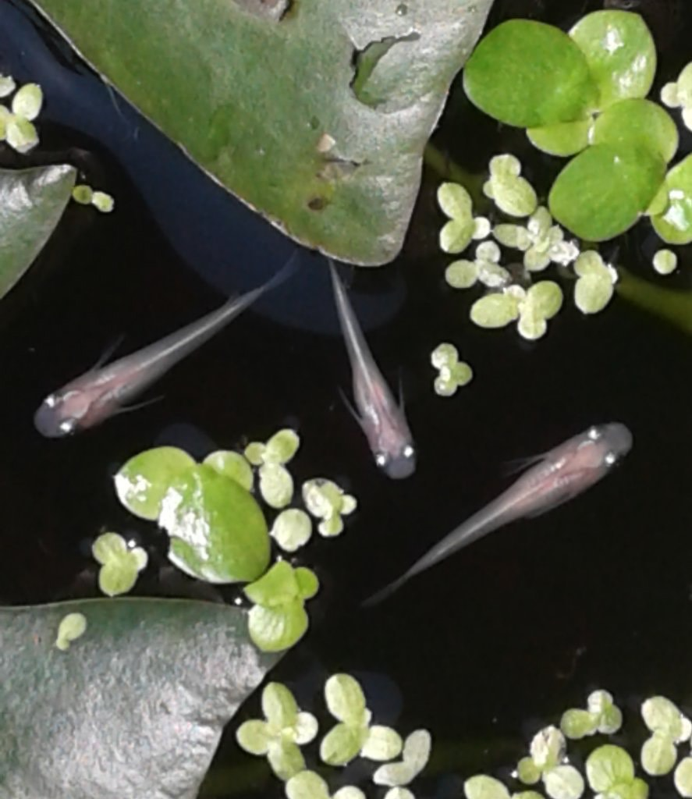

Examples
Medaka Rice Fish Pond Example #1

Medaka Rice Fish Pond Example #2

Medaka Rice Fish Pond Example #3

Medaka Rice Fish Pond Example #4

Revitalize your backyard with the enchanting beauty of a Local Medaka Rice Fish Pond! Picture yourself surrounded by lush greenery, with the gentle sounds of water and the mesmerizing sight of colorful Medaka rice fish gracefully swimming in your very own pond. With our expertise, this idyllic scene can become a reality right at your doorstep.
Why Choose Us?
1. Medaka Rice Fish Specialists:
Our partnership with Betta Bettas Shop consists of passionate enthusiasts with extensive knowledge and experience in caring for Medaka rice fish. We'll ensure your pond provides the perfect environment for these captivating creatures to thrive.
2. Customized Designs:
Whether you prefer a cozy corner pond or a sprawling centerpiece, we'll work closely with you to design and construct a pond that complements your space and reflects your unique style.
3. Low Maintenance, High Enjoyment:
Our ponds are designed for maximum enjoyment with minimal upkeep. We use advanced filtration systems and eco-friendly practices to keep your pond pristine and your fish healthy, so you can spend more time admiring their beauty and less time on maintenance.
4. Educational and Therapeutic Benefits:
A Medaka rice fish pond isn't just a beautiful addition to your outdoor space – it's also a source of education and relaxation. Watching these peaceful fish can be both calming and therapeutic, making your pond a cherished retreat for both you and your family.
Ready to bring the serene beauty of a Medaka rice fish pond to your home? Reach out to us today to learn more about our services and schedule a consultation. Let's create the backyard oasis of your dreams together!